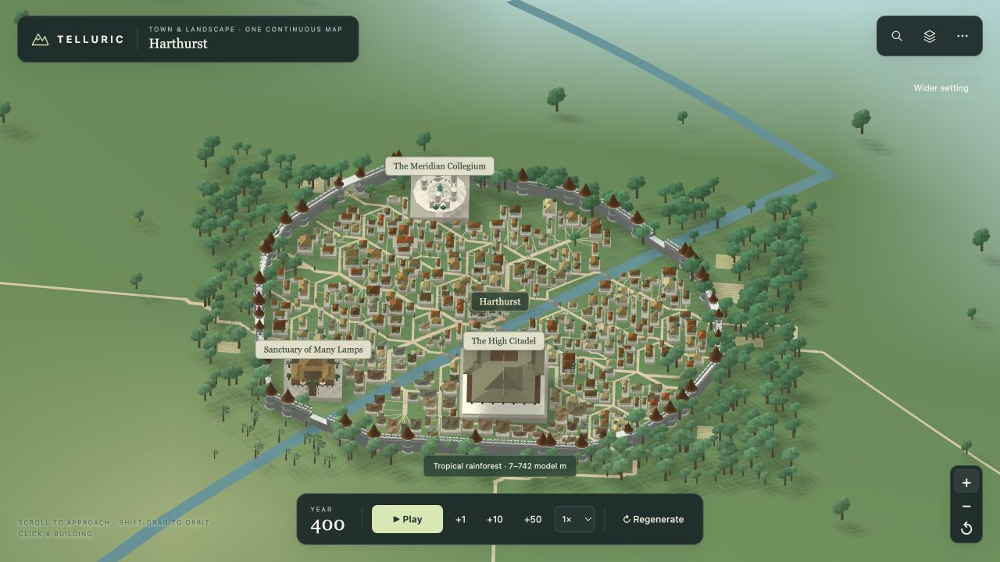
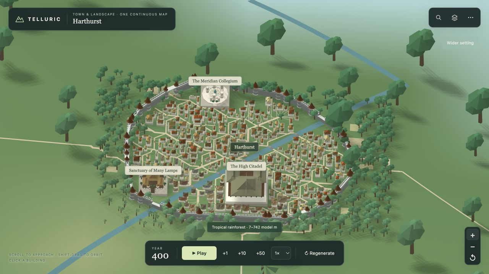

同一座 Harthurst，同一视角。拖动分隔线比较：城外树木与城内树木采用相同的尺寸规则，树高和树冠宽度都与住宅、城墙相称。


实际地图截图，世界、城市和镜头位置相同。基线来自已合并的河道修复版本；这里只比较植被比例。
城外两层植被都换算到城市单位。热带树冠、针叶林和低矮灌木各自保留原有的高矮差异。
缩放和调整窗口改变视野与显示精度，树木始终与建筑使用同一比例。草丛和芦苇也采用城镇尺寸。
核对热带 Harthurst 和寒温带 Longshaw，测试覆盖 11 种植物形态。城市布局和原有城内树木分布保持一致。